Raleigh Travel Guide
Vibrant city known for its rich history, diverse culture, and bustling economy. As the largest city in the state, visitors can explore a variety of attractions, including the North Carolina Museum of Art, the State Capitol Building, and the RBC Center. Outdoor enthusiasts can enjoy parks and green spaces like Pullen Park and the North Carolina Botanical Garden.
Places to See in Raleigh
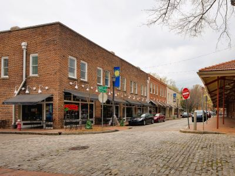
Des Moines Guy, CC BY-SA 3.0, via Wikimedia Commons; Image Size Adjusted

City Market
Historic district featuring cobblestone streets lined with art galleries, boutique shops, and diverse dining options.

Danksergeant15, CC BY-SA 4.0, via Wikimedia Commons; Image Size Adjusted

Dix Park
Expansive urban park offering scenic skyline views, rolling meadows, historic architecture, and diverse recreational spaces.
Danksergeant15, CC BY-SA 4.0, via Wikimedia Commons; Image Size Adjusted
Gregg Museum of Art & Design
University-affiliated museum showcasing an eclectic collection of global art, design, and craft objects in a contemporary setting.
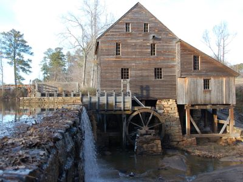
Des Moines Guy, CC BY-SA 3.0, via Wikimedia Commons; Image Size Adjusted
Historic Yates Mill County Park
Restored 18th-century gristmill surrounded by a 174-acre nature park with trails, a pond, and educational exhibits.
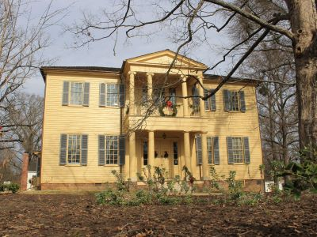
Danksergeant15, CC BY-SA 4.0, via Wikimedia Commons; Image Size Adjusted
Mordecai Historic Park
Historic estate featuring Raleigh’s oldest house on its original foundation, preserved outbuildings, and guided tours exploring early American life.
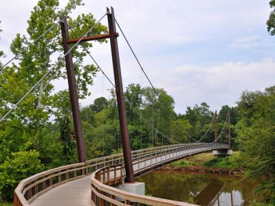
Dsmspence, CC BY-SA 3.0, via Wikimedia Commons; Image Size Adjusted

Neuse River Greenway Trail
Scenic multi-use trail stretching over 27 miles along the Neuse River, featuring wetlands, boardwalks, and connections to parks and historic sites.
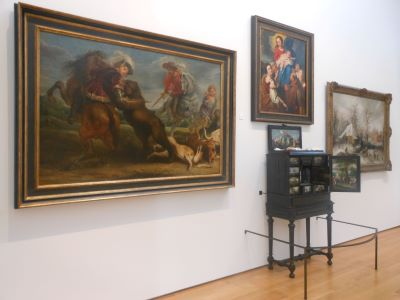
Danksergeant15, CC BY-SA 4.0, via Wikimedia Commons; Image Size Adjusted
North Carolina Museum of Art
Expansive art museum featuring global collections, rotating exhibitions, and a 164-acre outdoor park with trails and large-scale sculptures.
Jeff P from Berkeley, CA, USA, CC BY 2.0, via Wikimedia Commons; Image Size Adjusted
.jpg){kind=link}
North Carolina Museum of History
Smithsonian-affiliated museum preserving over 14,000 years of North Carolina history through immersive exhibits, artifacts, and educational programs.
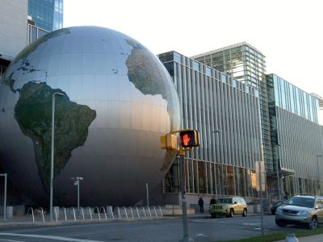
Jeff P from Berkeley, CA, USA, CC BY 2.0, via Wikimedia Commons; Image Size Adjusted
North Carolina Museum of Natural Sciences
Four-story science museum featuring live animals, immersive exhibits, a butterfly conservatory, and a 3D theater, with a connected research center and outdoor café.
Jeff P from Berkeley, CA, USA, CC BY 2.0, via Wikimedia Commons; Image Size Adjusted
North Carolina State Capitol
Greek Revival-style civic building completed in 1840, offering self-guided and guided tours, historic exhibits, and landscaped grounds with monuments.
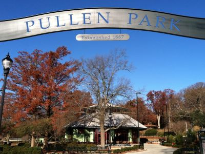
Jeff P from Berkeley, CA, USA, CC BY 2.0, via Wikimedia Commons; Image Size Adjusted
Pullen Park
Historic public park offering amusements, playgrounds, pedal boats, and cultural venues across 66 acres of landscaped grounds.
Danksergeant15, CC BY-SA 4.0, via Wikimedia Commons; Image Size Adjusted
Randleigh Dairy Heritage Museum
Interactive dairy museum offering guided tours of a working farm, hands-on exhibits, and Howling Cow ice cream tastings.
Overview
Raleigh is the capital of North Carolina, in the Piedmont region in the east-central part of the state, and one of the anchors of the Research Triangle, with Durham and Chapel Hill. Known as the "City of Oaks," it is a center for government, technology, and education, home to North Carolina State University, and has consistently ranked among the best places in the country to live and work. The city has a number of free museums, a growing downtown, and miles of greenways.
Visitors come to Raleigh for its free museums, including the North Carolina Museum of Art, the North Carolina Museum of Natural Sciences, and the North Carolina Museum of History. They also come for the State Capitol, Dorothea Dix Park, the Warehouse District, and the local food and craft beer scene, and for Carolina Hurricanes hockey.
History
Raleigh was established in 1792 as the planned capital of North Carolina, chosen for its central location and named for Sir Walter Raleigh, who sponsored the first English colonies in the New World. The first State House burned in 1831, and the current Capitol, a Greek Revival building, was completed in 1840. In 1865, General Sherman's army occupied the city during the Civil War, and it was spared from burning. In 1887, North Carolina State University was founded as a land-grant college, and in 1959 the Research Triangle Park was created, bringing technology and research companies that have made the region one of the fastest-growing in the country.
Sightseeing and Popular Landmarks
The North Carolina State Capitol is a National Historic Landmark and is open for tours. City Market is a historic area with cobblestone streets, shops, and restaurants, and the Raleigh Warehouse District has galleries, restaurants, and bars. Dorothea Dix Park is a 308-acre park with views of the skyline, and Mordecai Historic Park has the oldest house in Raleigh on its original site. Pullen Park is the oldest amusement park in North Carolina, with a carousel and a miniature train.
Culture and Museums
Raleigh has several free museums. The North Carolina Museum of Art has a collection ranging from ancient Egyptian art to modern works, with a park of sculptures, and the Museum of Natural Sciences has dinosaur skeletons and a Dueling Dinosaurs fossil. The Museum of History covers the state's history, and the Gregg Museum of Art & Design at NC State has a collection of design and folk art. The Randleigh Dairy Heritage Museum shows farm history.
Parks
Raleigh has a system of more than 200 parks and 100 miles of greenways. The Neuse River Greenway Trail runs for 27 miles, and Historic Yates Mill County Park has a restored gristmill and trails. Umstead State Park, between Raleigh and Durham, has forests, lakes, and trails, and Lake Johnson and Lake Crabtree are popular for boating and fishing. The Capital Area Greenway connects many parks across the city.
Sports
Raleigh's major league team is the Carolina Hurricanes of the NHL, who play at Lenovo Center and won the Stanley Cup in 2006. The North Carolina State Wolfpack are the city's college team, with football at Carter-Finley Stadium, and basketball at Lenovo Center, and the Wolfpack's rivalry with Duke and North Carolina is a highlight of the local sports calendar.
Seasons and Weather
Raleigh has a humid subtropical climate. Summers are hot and humid, with highs in the upper 80s°F, and winters are mild, with highs in the 50s°F and about 7 inches of snow. Spring and fall are the most pleasant seasons, with blooming dogwoods and azaleas in spring, and thunderstorms are common in summer.
This article uses material from Wikipedia as well as information from official tourism and institutional sources. Key references include Visit Raleigh, North Carolina Museum of Art, North Carolina Museum of Natural Sciences, North Carolina State Capitol, Carolina Hurricanes, Visit North Carolina, and National Weather Service Raleigh. Wikipedia material is from the article "Raleigh, North Carolina", and is available under the Creative Commons Attribution-Share-Alike License 3.0.
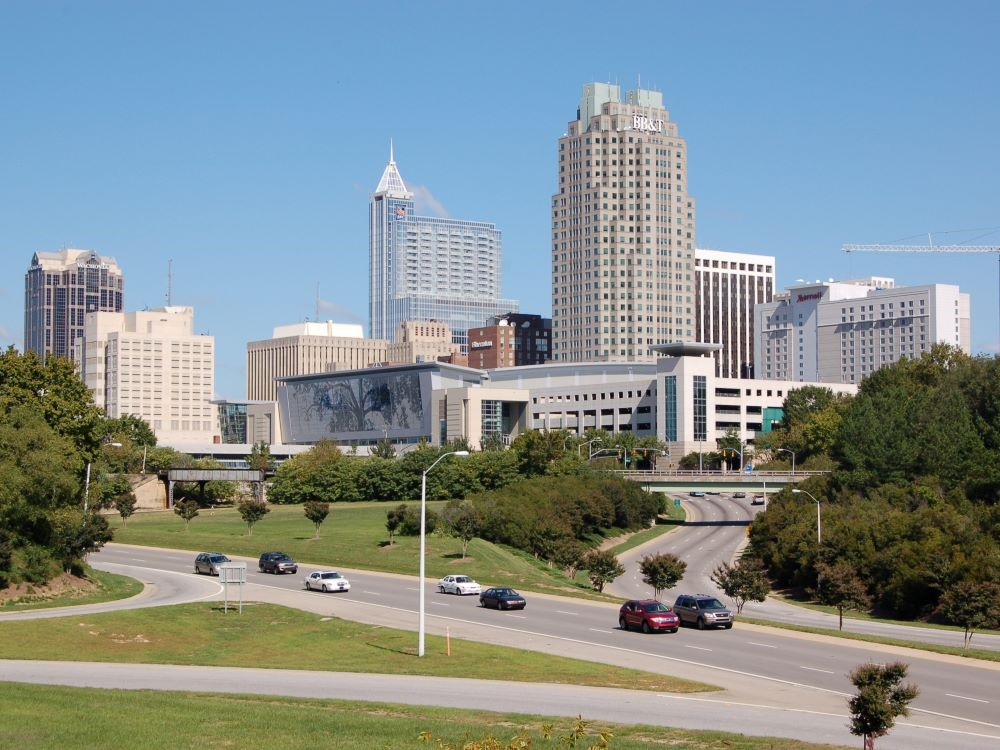
.jpg){kind=link}
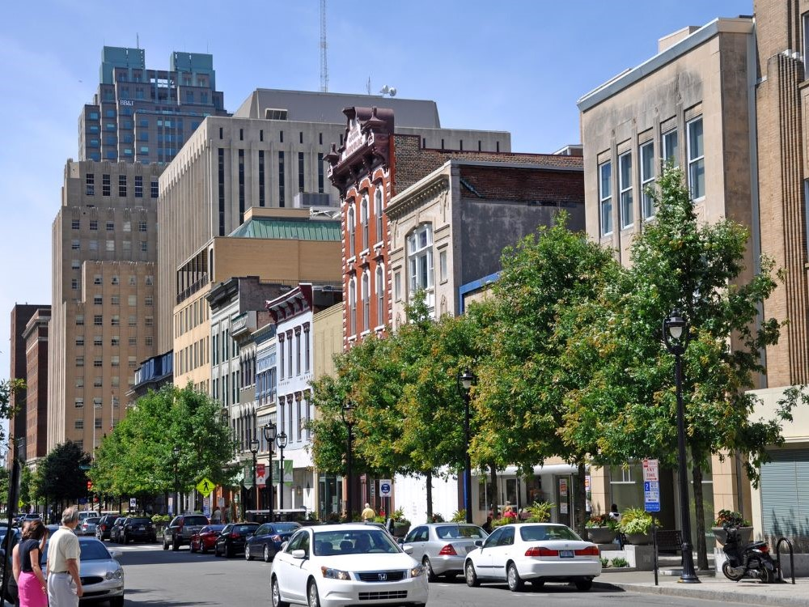

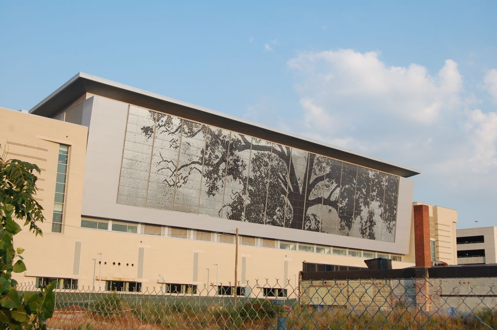
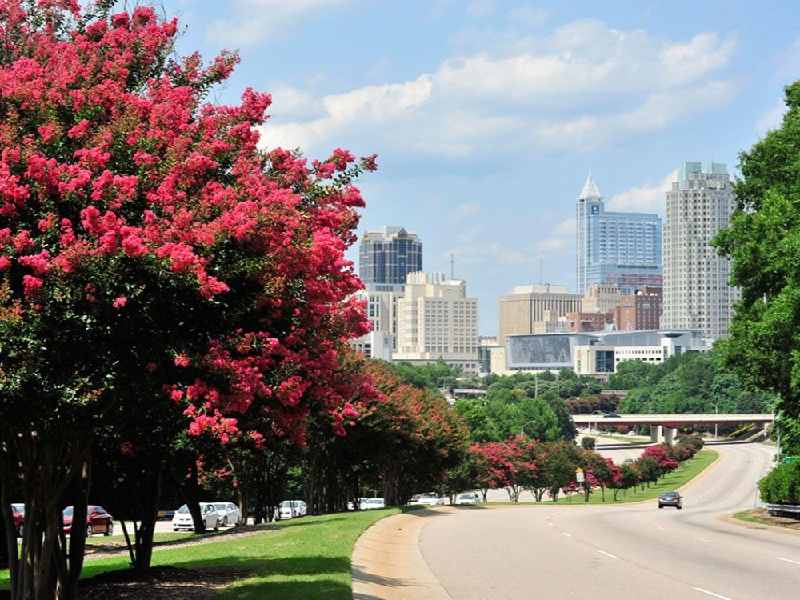